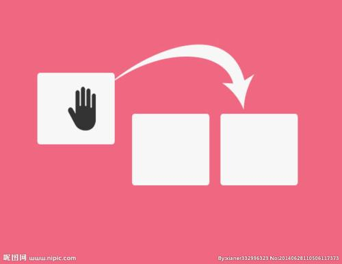

- 
文件头用来记录文件名、文件属性、占用簇号等信息，文件头保存在一个簇并映射在FAT表（文件分配表）中。而真实的数据则是保存在数据区当中的。平常所做的删除，其实是修改文件头的前2个代码，这种修改映射在FAT表中，就为文件作了删除标记，并将文件所占簇号在FAT表中的登记项清零，表示释放空间，这也就是平常删除文件后，硬盘空间增大的原因。而真正的文件内容仍保存在数据区中，并未得以删除。要等到以后的数据写入，把此数据区覆盖掉，这样才算是彻底把原来的数据删除。如果不被后来保存的数据覆盖，它就不会从磁盘上抹掉。用Fdisk分区和Format格式化和文件的删除类似，前者只是改变了分区表，后者只是修改了FAT表，都没有将数据从数据区直接删除。 由文件删除的原理可知，要彻底删除数据，只有把删除文件所在的数据区完全覆盖掉。绝大部分彻底删除工具所使用的就是这个道理：把无用的数据反复写入删除文件的数据区，并进行多次地覆盖，从而达到完全删除文件的目的。 Windows的这种伪删除，虽然给我们带来了好处，让我们有后悔药可吃。但对于很机密的文件就有了麻烦，存在着被重新恢复的可能性
VPRO+F1 波浪模式（第二次按下固定当前颜色）；
VPRO+F2 光谱循环（第二次按下固定当前颜色）；
VPRO+F3 七彩循环呼吸（第二次按下固定当前颜色）；
VPRO+F4（第一次） 天外飞仙（堆栈模式）；
VPRO+F4（第二次） 波光粼粼；
VPRO+F5 区彩模式；
VPRO+F5 （第二次）自定义颜色模式（点击颜色区域内的任一个按键选择颜色）；
VPRO+F6 常亮模式；
VPRO+F7 颜色切换（上一种）；
VPRO+F8 颜色切换（下一种）
VPRO+F9 亮度+
VPRO+F10 亮度-
VPRO+F11 频率+
VPRO+F12 频率-
VPRO+win win锁定/解锁（蓝色条状灯闪2下/蓝色条状灯闪4下）